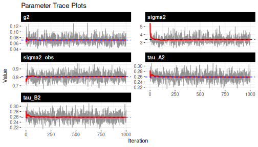
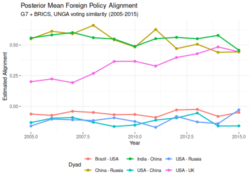
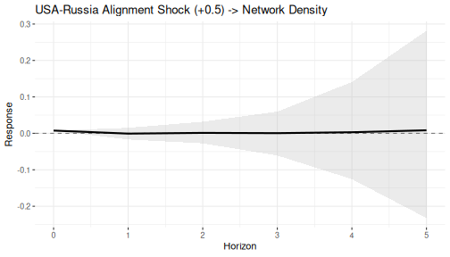
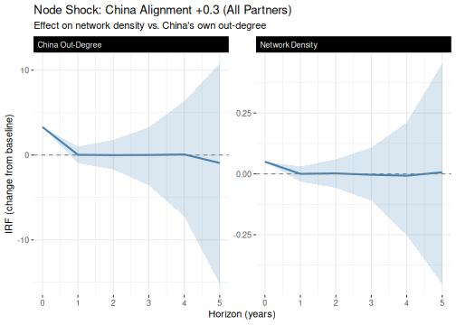
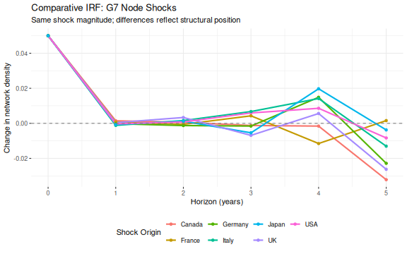
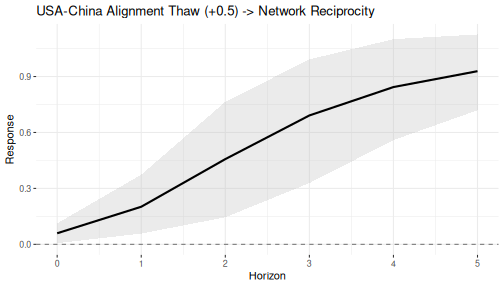

Applied Example: Foreign Policy Alignment Among Major Powers
Shahryar Minhas
2026-03-16
Source:vignettes/applied_ir.Rmd
applied_ir.Rmd1 Overview
This vignette walks through a complete dbn workflow on
real data — fitting a dynamic model to foreign policy alignment among 12
major powers (G7 + BRICS) and using impulse response functions (IRFs) to
study how shocks propagate through the network.
We use UNGA voting similarity scores from the
peacesciencer package. The DBN model captures both the
time-varying latent structure of the alignment network and the
transition dynamics that govern how it evolves. IRFs then let us ask
counterfactual questions — like “what happens to the broader network if
USA-Russia alignment suddenly improves?” — that standard dyadic
approaches can’t address.
The results here are for methodological demonstration; substantive conclusions would require longer MCMC runs, model comparison, and domain-specific validation.
2 Data preparation
We use the kappavv measure from
peacesciencer::add_fpsim(), which captures pairwise
agreement in UN General Assembly voting. It’s continuous and symmetric
(kappavv(i, j) = kappavv(j, i)), ranging from -1
(systematic disagreement) to +1 (perfect agreement). Because it’s
continuous, we use the Gaussian family.
Other UNGA similarity indices exist — including ideal point distances
from Bailey, Strezhnev & Voeten (2017) — and the choice of measure
may affect substantive conclusions. But kappavv is a good
fit for this tutorial because its continuous, bounded range and
symmetric structure map directly onto the model’s assumptions.
# G7 + BRICS: 12 actors
actor_codes = c(
USA = 2, Canada = 20, UK = 200, France = 220, Germany = 255,
Italy = 325, Japan = 740, Brazil = 140, Russia = 365,
India = 750, China = 710, SouthAfrica = 560
)
actor_labels = names(actor_codes)
n = length(actor_codes)
# convenience indices for IRF analysis later
usa_idx = which(actor_labels == "USA")
russia_idx = which(actor_labels == "Russia")
china_idx = which(actor_labels == "China")
# build dyadic panel 2005-2015 (UNGA similarity available through 2015)
dyads = create_dyadyears(subset_years = 2005:2015) |>
add_fpsim()
# filter to our actors
dyads_sub = dyads[dyads$ccode1 %in% actor_codes &
dyads$ccode2 %in% actor_codes, ]
years = sort(unique(dyads_sub$year))
Tt = length(years)
cat("Actors:", n, "\n")
#> Actors: 12
cat("Time points:", Tt, "(", min(years), "-", max(years), ")\n")
#> Time points: 11 ( 2005 - 2015 )Next, we reshape the dyadic panel into the [n, n, p, T]
array that dbn() expects. Each slice is the full alignment
matrix at one time point, with NA on the diagonal to
exclude self-ties.
# build mapping from COW code to matrix index
code_to_idx = setNames(seq_along(actor_codes), actor_codes)
# initialize 4D array: [n_row, n_col, p, T]
Y = array(NA_real_, dim = c(n, n, 1, Tt),
dimnames = list(actor_labels, actor_labels, "unga",
as.character(years)))
for (i in seq_len(nrow(dyads_sub))) {
row_i = code_to_idx[as.character(dyads_sub$ccode1[i])]
col_j = code_to_idx[as.character(dyads_sub$ccode2[i])]
t_idx = which(years == dyads_sub$year[i])
Y[row_i, col_j, 1, t_idx] = dyads_sub$kappavv[i]
}
# set diagonal to NA (no self-ties)
for (t in 1:Tt) diag(Y[, , 1, t]) = NA
cat("Array dimensions:", paste(dim(Y), collapse = " x "), "\n")
#> Array dimensions: 12 x 12 x 1 x 11
cat("Missing rate:", round(100 * mean(is.na(Y)), 1), "%\n")
#> Missing rate: 8.3 %
cat("Value range:", round(range(Y, na.rm = TRUE), 3), "\n")
#> Value range: -0.245 1Here’s a snapshot of the 2010 cross-section. Higher values mean more similar UNGA voting; negative values mean systematic disagreement.
# 2010 alignment snapshot
Y_2010 = Y[, , 1, which(years == 2010)]
round(Y_2010, 2)
#> USA Canada UK France Germany Italy Japan Brazil Russia India
#> USA NA 0.35 0.35 0.30 0.21 0.16 0.17 -0.04 -0.09 -0.11
#> Canada 0.35 NA 0.44 0.50 0.72 0.68 0.61 -0.04 0.07 -0.20
#> UK 0.35 0.44 NA 0.89 0.67 0.59 0.50 -0.04 0.05 -0.13
#> France 0.30 0.50 0.89 NA 0.74 0.70 0.55 -0.04 0.12 -0.05
#> Germany 0.21 0.72 0.67 0.74 NA 0.94 0.80 -0.02 0.17 -0.16
#> Italy 0.16 0.68 0.59 0.70 0.94 NA 0.75 -0.03 0.22 -0.08
#> Japan 0.17 0.61 0.50 0.55 0.80 0.75 NA -0.06 0.04 -0.07
#> Brazil -0.04 -0.04 -0.04 -0.04 -0.02 -0.03 -0.06 NA 0.14 0.21
#> Russia -0.09 0.07 0.05 0.12 0.17 0.22 0.04 0.14 NA 0.19
#> India -0.11 -0.20 -0.13 -0.05 -0.16 -0.08 -0.07 0.21 0.19 NA
#> China -0.11 -0.14 -0.12 -0.11 -0.14 -0.15 -0.02 0.29 0.43 0.45
#> SouthAfrica -0.07 -0.07 -0.07 -0.07 -0.06 -0.06 -0.10 0.57 0.32 0.21
#> China SouthAfrica
#> USA -0.11 -0.07
#> Canada -0.14 -0.07
#> UK -0.12 -0.07
#> France -0.11 -0.07
#> Germany -0.14 -0.06
#> Italy -0.15 -0.06
#> Japan -0.02 -0.10
#> Brazil 0.29 0.57
#> Russia 0.43 0.32
#> India 0.45 0.21
#> China NA 0.48
#> SouthAfrica 0.48 NA3 Fit the dynamic model
Since kappavv is symmetric
(Y[i,j] = Y[j,i]), we set symmetric = TRUE to
constrain the sender and receiver transition matrices to equality
().
This is the correct specification for undirected data and halves the
number of parameters.
fit = dbn(
data = Y,
model = "dynamic",
family = "gaussian",
symmetric = TRUE,
nscan = 5000,
burn = 2000,
odens = 5,
verbose = FALSE
)
summary(fit)Convergence check
Always check convergence before interpreting results. Here are the trace plots for the variance parameters.
plot_trace(fit)
plot of chunk convergence
Well-behaved traces show stationary fluctuation around a stable mean,
with no drift or stagnation. Notice that under the symmetric constraint,
tau_A2 and tau_B2 should be identical — a
useful sanity check. If you see trending or poor mixing, increase both
burn and nscan before proceeding.
4 Posterior alignment scores
Let’s extract the posterior mean alignment scores. The model estimates a time-varying and a static baseline — summing them gives smoothed alignment trajectories for each dyad.
# posterior mean Theta and M
Theta_mean = apply(fit$Theta, 1:4, mean)
M_mean = apply(fit$M, 1:3, mean)
# alignment = E[Theta_t] + E[M] = E[Theta_t + M] (by linearity)
alignment = array(NA, dim = c(n, n, 1, length(fit$time_kept)))
for (t_idx in seq_along(fit$time_kept)) {
alignment[, , 1, t_idx] = Theta_mean[, , 1, t_idx] + M_mean[, , 1]
}
# key dyads to track
key_dyads = list(
"USA - UK" = c("USA", "UK"),
"USA - China" = c("USA", "China"),
"USA - Russia" = c("USA", "Russia"),
"China - Russia" = c("China", "Russia"),
"India - China" = c("India", "China"),
"Brazil - USA" = c("Brazil", "USA")
)
stored_years = years[fit$time_kept]
df_align = do.call(rbind, lapply(names(key_dyads), function(nm) {
pair = key_dyads[[nm]]
i = which(actor_labels == pair[1])
j = which(actor_labels == pair[2])
data.frame(dyad = nm, year = stored_years,
alignment = alignment[i, j, 1, ],
stringsAsFactors = FALSE)
}))
ggplot(df_align, aes(x = year, y = alignment, colour = dyad)) +
geom_line(linewidth = 1) +
geom_point(size = 2) +
labs(
title = "Posterior Mean Foreign Policy Alignment",
subtitle = "G7 + BRICS, UNGA voting similarity (2005-2015)",
x = "Year", y = "Estimated Alignment", colour = "Dyad"
) +
theme_bw() +
theme(
panel.border = element_blank(),
legend.position = "bottom"
)
plot of chunk alignment-timeseries
The model recovers patterns consistent with well-known geopolitical structures. China-Russia and India-China cluster at high positive alignment, while USA-China and USA-Russia remain persistently negative. The USA-UK dyad is moderately positive, as expected given the transatlantic alliance. These trajectories provide a reasonable foundation for the counterfactual exercises that follow.
5 Impulse response: edge shock
How does a bilateral shock propagate through the broader network? The IRF answers this by applying the estimated transition dynamics recursively:
At each horizon, we evaluate a network statistic on the perturbed versus baseline network. These are counterfactual exercises — not causal predictions — that assume the transition dynamics remain invariant to the shock.
Let’s simulate a positive shock to USA-Russia alignment and track its effect on network density.
# symmetric shock: USA-Russia alignment improves by 0.5
# (for context, the data SD is ~0.33, so this is a ~1.5 SD shift)
S_edge = build_shock(m = n, type = "unit_edge",
i = usa_idx, j = russia_idx, magnitude = 0.5)
S_edge = S_edge + t(S_edge) # symmetric (undirected network)
# compute IRF: effect on network density over 5 horizons
# using all available posterior draws for stable credible intervals
irf_density = compute_irf(
fit,
shock = S_edge,
H = 5,
t0 = 3,
stat_fun = dbn::stat_density
)
print(irf_density)
#> Network Impulse Response Function
#> Model: dynamic
#> Statistic: custom_function
#> Shock time: 3
#>
#> Summary:
#> horizon mean median sd q025 q975 q10 q90
#> 1 0 0.008 0.008 0.000 0.008 0.008 0.008 0.008
#> 2 1 -0.001 0.000 0.015 -0.034 0.028 -0.017 0.015
#> 3 2 0.001 0.001 0.029 -0.058 0.062 -0.028 0.032
#> 4 3 0.000 0.000 0.064 -0.146 0.135 -0.061 0.060
#> 5 4 0.003 0.000 0.219 -0.386 0.322 -0.126 0.141
#> 6 5 0.008 0.002 0.395 -0.608 0.588 -0.232 0.282
plot(irf_density, ci_level = 0.90,
title = "USA-Russia Alignment Shock (+0.5) -> Network Density")
plot of chunk plot-irf-edge
At horizon 0, the shock adds 0.5 to two off-diagonal cells in a 12-actor network, producing a density increase of . This initial effect is exact because density is a linear statistic. At subsequent horizons, the credible intervals widen — reflecting posterior uncertainty in the transition matrices. The rate of decay tells you about the spectral properties of : eigenvalues near unity sustain perturbations, while values well below unity produce rapid decay.
6 Impulse response: node shock
What if a country shifts its alignment toward all partners at once? Here we shock China’s engagement with every other actor by +0.3 and track two statistics: overall network density and China’s own out-degree.
S_node = build_shock(m = n, type = "node_out",
i = china_idx, magnitude = 0.3)
diag(S_node) = 0 # remove self-loop
S_node = S_node + t(S_node) # symmetrize for undirected network
# effect on network density
irf_china_dens = compute_irf(
fit, shock = S_node, H = 5, t0 = 3,
stat_fun = dbn::stat_density
)
# effect on China's out-degree (sum of its alignment scores)
irf_china_outdeg = compute_irf(
fit, shock = S_node, H = 5, t0 = 3,
stat_fun = function(X) dbn::stat_out_degree(X)[china_idx]
)
df_irfs = rbind(
data.frame(irf_china_dens, stat = "Network Density"),
data.frame(irf_china_outdeg, stat = "China Out-Degree")
)
ggplot(df_irfs, aes(x = horizon, y = mean)) +
geom_ribbon(aes(ymin = q10, ymax = q90), alpha = 0.2,
fill = "steelblue") +
geom_line(colour = "steelblue", linewidth = 1) +
geom_hline(yintercept = 0, linetype = "dashed", colour = "grey50") +
facet_wrap(~ stat, scales = "free_y") +
labs(
title = "Node Shock: China Alignment +0.3 (All Partners)",
subtitle = "Effect on network density vs. China's own out-degree",
x = "Horizon (years)", y = "IRF (change from baseline)"
) +
theme_bw() +
theme(
panel.border = element_blank(),
strip.background = element_rect(fill = "black", color = "black"),
strip.text.x = element_text(color = "white", hjust = 0)
)
plot of chunk plot-irf-node
At horizon 0, the symmetrized shock adds 0.3 to all 22 of China’s ties, increasing density by and China’s out-degree by . Notice the different y-axis scales — the node-level statistic registers a much larger absolute change. As the shock propagates, the two trajectories need not decay at the same rate, since the transition dynamics can redistribute alignment in ways that differentially affect global versus local statistics.
7 Impulse response: comparing shock origins
Which country’s engagement shift produces the largest ripple effect? Here we compute the density IRF for an identical outward shock from each G7 member. Since all shocks have the same magnitude, any differences at horizons 1+ reflect each country’s structural position in the estimated dynamics.
g7 = c("USA", "Canada", "UK", "France", "Germany", "Italy", "Japan")
irf_list = lapply(setNames(g7, g7), function(country) {
idx = which(actor_labels == country)
S = build_shock(m = n, type = "node_out", i = idx, magnitude = 0.3)
diag(S) = 0
S = S + t(S) # symmetrize
compute_irf(
fit, shock = S, H = 5, t0 = 3,
stat_fun = dbn::stat_density
)
})
df_compare = do.call(rbind, lapply(names(irf_list), function(nm) {
d = irf_list[[nm]]
data.frame(horizon = d$horizon, mean = d$mean,
q10 = d$q10, q90 = d$q90,
country = nm, stringsAsFactors = FALSE)
}))
ggplot(df_compare, aes(x = horizon, y = mean, colour = country)) +
geom_line(linewidth = 1) +
geom_point(size = 1.5) +
geom_hline(yintercept = 0, linetype = "dashed", colour = "grey50") +
labs(
title = "Comparative IRF: G7 Node Shocks",
subtitle = "Same shock magnitude; differences reflect structural position",
x = "Horizon (years)", y = "Change in network density",
colour = "Shock Origin"
) +
theme_bw() +
theme(
panel.border = element_blank(),
legend.position = "bottom"
)
plot of chunk plot-irf-compare
All countries produce the same effect at horizon 0, as expected. Differences emerge at subsequent horizons as each perturbation propagates differently through the estimated dynamics. That said, the posterior uncertainty (omitted for visual clarity) is large relative to the between-country differences — so the ranking isn’t statistically distinguishable with this chain length. Think of this as illustrating the method’s capacity rather than as definitive influence estimates.
8 Reciprocity analysis
So far we’ve used linear statistics (density, degree). Let’s try a nonlinear one — network reciprocity. This matters because nonlinear statistics interact with the baseline network, introducing posterior uncertainty even at horizon 0. Here we simulate a USA-China thaw (+0.5) and track reciprocity.
S_usachn = build_shock(m = n, type = "unit_edge",
i = usa_idx, j = china_idx, magnitude = 0.5)
S_usachn = S_usachn + t(S_usachn) # symmetric shock
irf_recip = compute_irf(
fit,
shock = S_usachn,
H = 5,
t0 = 3,
stat_fun = dbn::stat_reciprocity
)
plot(irf_recip, ci_level = 0.90,
title = "USA-China Alignment Thaw (+0.5) -> Network Reciprocity")
plot of chunk plot-irf-recip
Notice the positive bump at horizon 0 — adding a mutually positive tie mechanically increases network reciprocity. Unlike the density IRF, there’s posterior uncertainty even at horizon 0 because reciprocity depends on the full baseline network, which varies across draws. The effect decays quickly, with credible intervals covering zero by horizon 1. A single bilateral thaw increases reciprocity at impact but doesn’t sustain it through the estimated dynamics.
9 Practical guidance
Choosing model settings for real data
The settings in this vignette (nscan = 5000,
burn = 2000) are moderate and intended for reasonable build
times. For publication-quality results, increase the chain length
substantially. Always verify convergence with
plot_trace(fit) before interpreting results.
fit = dbn(Y, model = "dynamic", family = "gaussian",
symmetric = TRUE, nscan = 10000, burn = 5000, odens = 5)Node count limitations
The dynamic model scales as per iteration. Here are rough run-time expectations on an 8-core machine. For 50+ actors, use the low-rank approximation instead.
| Actors | Time points | Approx. time (8 cores) |
|---|---|---|
| 10-15 | 10-20 | 5-15 minutes |
| 15-25 | 10-20 | 15-60 minutes |
| 25-50 | 10-20 | 1-4 hours |
| 50+ | any | Use model = "lowrank"
|
Diagnosing performance bottlenecks
Set verbose = 200L to get a per-block timing breakdown
at each reported iteration — useful for identifying bottlenecks in large
models.
fit = dbn(Y, model = "dynamic", family = "gaussian",
nscan = 100, burn = 10, verbose = 200L)Interpreting IRFs
Key things to keep in mind when reading IRF output:
- Horizon 0 is the immediate, mechanical consequence of the shock.
- Linear statistics (density, degree): no posterior uncertainty at horizon 0, because the shock is a fixed constant.
- Nonlinear statistics (reciprocity, transitivity): uncertainty even at horizon 0, because the statistic interacts with the baseline network, which varies across posterior draws.
- Horizons 1+: the bilinear dynamics (, ) propagate the shock forward. Uncertainty widens because the transition matrices are themselves estimated with posterior noise.
- Decay rate: governed by the spectral radius of — eigenvalues near unity sustain the perturbation, values well below unity produce rapid decay.
- Credible intervals reflect posterior uncertainty in model parameters, not sampling variability in the observed data.
- IRFs are counterfactual scenarios that assume the transition dynamics remain invariant to the shock.
Symmetric networks
When your data are undirected (Y[i,j] = Y[j,i]), make
two choices consistently:
- Set
symmetric = TRUEindbn()to constrain . - Symmetrize any shock matrix via
S = S + t(S)after callingbuild_shock(), so both directions of a tie receive equal perturbation.
Using time_kept for time-thinned models
When time_thin > 1, the stored
and
/
arrays correspond to a subset of the full time series. The
time_kept element records which original time indices were
retained, so you can map stored indices back to substantive time
points.
original_years = years[fit$time_kept]